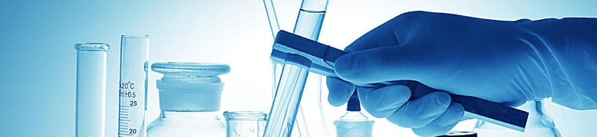

实验室安全—化学试剂使用与管理绕不过的话题
2018-11-8文/张丽
仪器信息网讯 2016年11月1--4日，“第十届全国试剂与应用技术交流会” 在广州广东工业大学召开。本次会议由全国化学试剂信息站主办，《化学试剂》编辑部、广东工业大学轻工化工学院承办。近80位代表出席本届交流会。

化学试剂是科研和生产活动的基础，也是科研和生产活动的必备粮草。鉴于去年发生天津港化学品爆炸事件以及后来多起实验室爆炸事故，本届会议围绕“试剂品类和技术发展与实验室危险化学品管理”的主题，邀请众多专家学者共聚一堂，探讨了我国试剂行业的技术及发展现状与趋势。同时围绕实验室危险化学品事故等热点问题进行讨论，提出危险化学品事故危机的解决方案，力求推进试剂行业的发展。
大会特别邀请到中国工程院院士、中国科学院高能物理研究所柴之芳教授到会致辞并主持上午的主题演讲。针对中国试剂耗材市场上国外厂商占据绝对优势份额的情况，柴院士表达了自己的中国梦：希望有一天，中国企业并购外国企业、化学试剂国企并购默克的案例出现。
《化学试剂》期刊编委会主任、北京大学医学部王夔教授特别为大会发来致辞，即表示出对大会的关注，也表达出对试剂行业健康发展的殷切期望。
作为大会特邀嘉宾，广州工业大学副校长陈为民先生、国药集团化学试剂有限公司常务副总经理王刚先生、中国化学试剂工业协会理事长南山先生、中国化工学会精细化工专业委员会副秘书长仲晓萍女士、科研用试剂产业技术创新战略联盟秘书长牛刚先生、上海化学试剂产业联盟秘书长马兰风女士也分别作了热情洋溢的致辞。
大会由《化学试剂》杂志主编何晖女士宣读了2014-2015年度《中国化学试剂行业十强企业》和《2015年度中国试剂优秀品牌》名单。西陇化工等十家企业获奖，其中既有老牌国家队，也有成立不足十年的后起之秀。获奖企业名单如下：
西陇科学股份有限公司;国药集团化学试剂有限公司;广东光华科技股份有限公司;南京化学试剂股份有限公司;广州化学试剂厂;天津市科密欧化学试剂有限公司;上海阿拉丁生化科技股份有限公司;安徽时联特种溶剂股份有限公司;上海试四赫维化工有限公司;上海三爱思试剂有限公司。
全国化学试剂信息站自2009年起，持续发布双年度《中国试剂发展调研报告》，受到各方关注。报告的编写得到中国化学试剂工业协会、行业内企业的支持与协助，其中企业经营数据部分，来自行业协会年度的数据统计报表，以及全国化学试剂信息站历年来对行业重点企业经营数据的统计汇总。此次评选的行业十强企业是汇集报告统计数据，将近两年来综合实力排名前十的企业评选而成。
会议同期还发布了《2014-2015年度中国试剂行业发展研究报告》、《2015年度中国试剂品牌影响力报告》，进行各项颁奖以及企业产品展示等活动。
大会还邀请到日本京都大学Keiji Maruoka教授做了题为“非对称态转移催化：Maruoka催化和工业应用的基本设计”的演讲。Keiji Maruoka教授1980
年于美国夏威夷大学获有机化学博士学位，同年到名古屋大学任教。2000年至今在日本京都大学任职教授。Maruoka 教授在有机催化领域享有盛誉并做出很大贡献，获近20 项日本本土和国际奖项。
特别值得关注的是，中国化学试剂工业协会理事长南山先生的演讲，围绕“化学试剂生产、营销和实验室危险化学品管理”做了一些创新模式探讨。他提出了“实验管家服务工作平台”的概念，围绕实验室需求，建立“电子商务网络销售平台”，“超市采购仓储平台”，“快递式运输平台”，“安全培训教育平台”，“质量检验检测平台”和“再加工生产及废物料处理平台”。南山先生说，这样的平台，单靠一家是做不起来的，甚至单个地方都做不成，因为服务一定是本地化的。所以只有多方合作才能成功。这需要行业内机构组织竭诚合作，才能完成。我们将继续关注这方面的进展。